Every key, dial and workflow
Your practical guide to the Social Stream Ninja Stream Deck plugin. The guide is bundled with the plugin, so the controls and icon reference also work offline.
Connect once
- Keep SSApp or the Social Stream Ninja Chrome extension running and enabled.
- Copy the session ID from Stream Deck Setup in SSApp, or Settings in the extension.
- Drag Setup onto a key in the Stream Deck app, select it, expand Setup and connection, and paste the ID or full overlay URL.
- Use Peer-to-peer normally. For WebSocket mode, enable SSN's remote API control and select WebSocket in the plugin. Defaults:
io.socialstream.ninja, TLS on, send channel 1, listen channel 2. - Choose Test Connection. The Setup key should say Online. Add the command keys and dial actions you need.
The connection settings are shared by all SSN actions and profiles. Keep the session ID and optional password private. Importing a full link may also change transport and password. Starter profiles are editable examples and do not replace your active profile.
The five action types
| Action | Place it on | How it works |
|---|---|---|
| Setup | Key | Configure the shared connection in the Stream Deck app. The physical key is a connection indicator; pressing it does not open settings or run Test Connection. |
| Preset Command | Key | Select a named command, fill any required value, then press the key once. There is no generic long-press or release command. |
| Custom Command | Key | Enter the API action, optional target and value. Objects, arrays and booleans can be entered as JSON. Use a preset when available for capability filtering and guided selection. |
| Timer Dial | Stream Deck + dial | Adjust SSN's shared stream timer. Its display shows current time and running/paused state. |
| Chat Review | Stream Deck + dial | Browse recent received messages, pin one, and feature from the default dock's pinned list. |
Devices without dials still support timer preset keys. Stream Deck Multi Actions can sequence key commands; they do not wait for a delayed Event Flow workflow to finish.
Timer Dial: the gestures are different
Example: start at 5:00. Turn right once → 5:10. Hold the dial down and turn right once → 6:10. Press/release → countdown starts. Press/release again → pause. Hold the screen → 5:00.
Change Seconds per turn in the inspector: a 5-second step makes held turns 30 seconds; a 30-second step makes held turns 3 minutes. This controls SSN's timer, not an independent timer per dial. Opening the SSN timer overlay is a separate step.
Chat Review: browse, pin, feature
- Open the default Social Stream dock with the same session. In WebSocket mode also enable Send chat messages to API server in SSN; chat uses channel 4. P2P receives the normal feed.
- Turn counterclockwise for older messages; clockwise for newer messages. The display's position/count tells you where you are.
- Press the dial to pin the displayed message in the dock.
- Tap the touchscreen above it to feature the next pinned message. This can be different from the message you are reviewing if the dock already has pinned messages.
- Hold that touchscreen area to unpin the reviewed message.
The review buffer contains messages received while a Chat Review action is visible. It is not a full chat-history download. An empty display may mean chat relay is off or no new messages have arrived.
Run a custom Event Flow workflow
- Open Event Flow in SSN and create a dedicated flow.
- Add Run from Stream Deck / API from Stream Deck & API. Set the trigger name to
intermission. - Connect it to an action, such as Show Text, and set the text. Save and enable the flow.
- For visual/audio actions, open the Flow Actions overlay with the same session; add that URL as an OBS Browser Source for your audience.
- Add a Preset Command key, select Event Flow workflows → Run workflow, then Refresh workflows and choose your saved flow.
- Press once. A check mark acknowledges that SSN accepted the run. Delays and external integrations continue afterward.
The picker saves the flow ID and trigger name. Renaming, disabling or deleting the trigger makes that saved selection unavailable; it is preserved for you to review. Refresh and reselect after changing it.
Advanced value:
{"trigger":"intermission","flowId":"YOUR_FLOW_ID","data":{"name":"Back in five minutes"}}Use {meta.workflow.data.name} in an action's text template. Omit flowId to run every enabled flow with that exact trigger name. Names are case-sensitive. Each press starts a run; add a Rate Limiter (THROTTLE) node if you want a cooldown. A delayed run can overlap a later press.
API clients use the same connection: {"action":"triggerWorkflow","value":{"trigger":"intermission"}}. getWorkflowTriggers lists enabled, saved triggers. Older hosts hide these presets until their capabilities advertise support.
Full Event Flow and HTTP/WebSocket/P2P examples. Existing eventFlowEvent OBS bridge events are separate from named workflow triggers.
Read the result correctly
- Setup / Offline / Connecting / Online: connection status, not OBS visibility.
- Check mark: command accepted or completed according to the API response. It does not prove an OBS scene is live or an external webhook succeeded.
- Alert: open Help and diagnostics on the selected action for the error.
- Query key: queue size, timer status and supported query results briefly replace the normal title for about three seconds.
- Product State: polls every five seconds while visible and shows SSN's selection, hidden or scheduled state.
- Reset Collected Credits: press twice within two seconds when used alone. The key says Press Again. In a Multi Action the preset sends the reset directly.
- Other resets/removals: do not assume a second press or long hold protects them. Their preset payload may already include confirmation; check the value and guide before adding them to a live profile.
Read the icons
The large symbol identifies the feature. The small badge identifies the operation. Titles remain important; colors alone do not identify an action.
- Triangle: start/show. Two bars: pause. Square: stop or hide.
- Triangle + vertical bar: next. Arrow around a circle: reset/restart.
- Plus/minus: add/remove. Cross: clear. Pencil: set/edit.
- “i”, list or “#”: read state, list items or count. Eye: preview. Flask: test.
- Waitlist winner and giveaway draw share a trophy/star motif. Read the key title: waitlist and giveaway are separate features. Waitlist message aliases also share an icon because they perform the same operation.
Every preset, with its icon and value
Only commands supported by the connected runtime are selectable. Desktop controls require SSApp. Unsupported bulk/settings entries may exist in the registry but remain unavailable. Blank values below mean no default is supplied; commands with a value label may still require input.
| Icon | Command | Value / default |
|---|---|---|
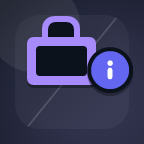 | Product StategetCommerceStateSocial Stream | No value field required— |
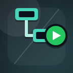 | Run WorkflowtriggerWorkflowSocial Stream | Trigger name or workflow JSON— |
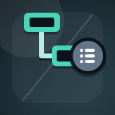 | List WorkflowsgetWorkflowTriggersSocial Stream | No value field required— |
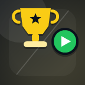 | Open GiveawaystartgiveawaySocial Stream | Giveaway ID/config JSON{"giveawayId":"default"} |
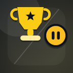 | Close GiveawayclosegiveawaySocial Stream | Giveaway ID JSON{"giveawayId":"default"} |
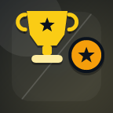 | Draw GiveawaydrawgiveawaySocial Stream | Giveaway ID JSON{"giveawayId":"default"} |
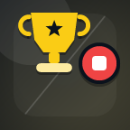 | Cancel & Refund GiveawaycancelgiveawaySocial Stream | Giveaway ID JSON{"giveawayId":"default"} |
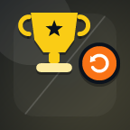 | New Giveaway RoundresetgiveawaySocial Stream | Giveaway ID JSON{"giveawayId":"default"} |
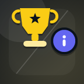 | Giveaway StategetgiveawaystateSocial Stream | Giveaway ID JSON{"giveawayId":"default"} |
Show ProductcommerceShowSocial Stream | Saved product URL (optional)— | |
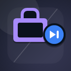 | Next ProductcommerceNextSocial Stream | Seconds (0 = until changed)0 |
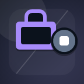 | Hide ProductscommerceHideSocial Stream | Seconds (0 = until changed)0 |
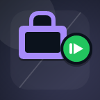 | Resume ProductscommerceResumeSocial Stream | No value field required— |
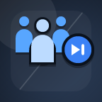 | Next In QueuenextInQueueSocial Stream | No value field required— |
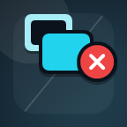 | Clear OverlayclearOverlaySocial Stream | No value field required— |
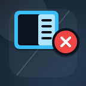 | Clear Dock MessagesclearDockSocial Stream | No value field required— |
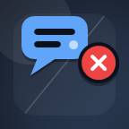 | Clear MessagesclearSocial Stream | No value field required— |
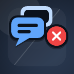 | Clear All MessagesclearAllSocial Stream | No value field required— |
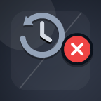 | Clear Saved HistoryclearHistorySocial Stream | Type confirmconfirm |
Start CreditscreditsStartSocial Stream | No value field required— | |
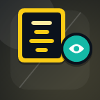 | Preview CreditscreditsPreviewSocial Stream | No value field required— |
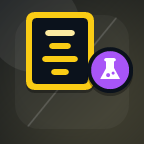 | Test CreditscreditsTestSocial Stream | No value field required— |
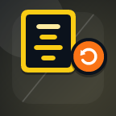 | Reset Collected CreditscreditsResetSocial Stream | No value field required— |
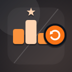 | Reset LeaderboardresetleaderboardSocial Stream | No value field required— |
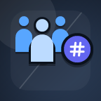 | Queue SizegetQueueSizeSocial Stream | No value field required— |
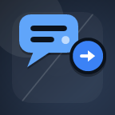 | Send ChatsendChatSocial Stream | MessageHello from Stream Deck |
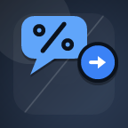 | Send Encoded ChatsendEncodedChatSocial Stream | Encoded messageHello%20from%20Stream%20Deck |
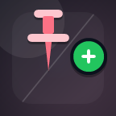 | Pin Dock MessagepinSocial Stream | Message ID or JSON message— |
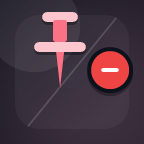 | Unpin Dock MessageunpinSocial Stream | Message ID— |
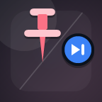 | Next Pinned MessagenextPinnedSocial Stream | No value field required— |
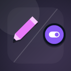 | Draw ModedrawmodeSocial Stream | true, false, or toggletoggle |
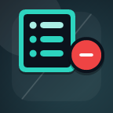 | Remove Waitlist EntryremovefromwaitlistSocial Stream | Entry number1 |
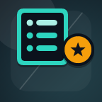 | Highlight Waitlist EntryhighlightwaitlistSocial Stream | Entry number1 |
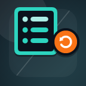 | Reset WaitlistresetwaitlistSocial Stream | No value field required— |
Stop Waitlist EntriesstopentriesSocial Stream | No value field required— | |
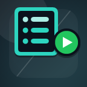 | Start Waitlist EntriesstartentriesSocial Stream | No value field required— |
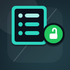 | Open Waitlist EntriesopenentriesSocial Stream | No value field required— |
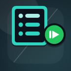 | Resume Waitlist EntriesresumeentriesSocial Stream | No value field required— |
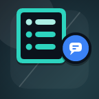 | Set Waitlist MessagewaitlistmessageSocial Stream | MessageType !join to enter! |
Set Waitlist MessagesetwaitlistmessageSocial Stream | MessageType !join to enter! | |
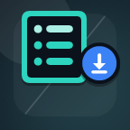 | Download WaitlistdownloadwaitlistSocial Stream | No value field required— |
Select WinnerselectwinnerSocial Stream | Winner count1 | |
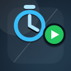 | Start TimerstarttimerSocial Stream | No value field required— |
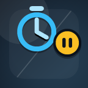 | Pause TimerpausetimerSocial Stream | No value field required— |
Toggle TimertoggletimerSocial Stream | No value field required— | |
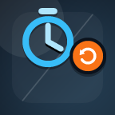 | Reset TimerresettimerSocial Stream | No value field required{"confirm":true} |
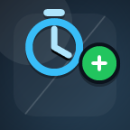 | Add Timer TimetimeraddSocial Stream | Seconds30 |
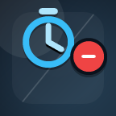 | Subtract Timer TimetimersubtractSocial Stream | Seconds30 |
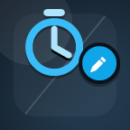 | Set TimersettimerSocial Stream | Timer JSON{"seconds":300} |
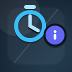 | Timer StategettimerstateSocial Stream | No value field required— |
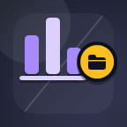 | Load Poll PresetloadpollSocial Stream | {"pollId":"..."}— |
Set Poll SettingssetpollsettingsSocial Stream | Poll settings JSON— | |
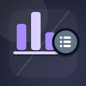 | Poll PresetsgetpollpresetsSocial Stream | No value field required— |
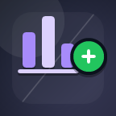 | Create PollcreatepollSocial Stream | Poll definition JSON— |
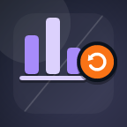 | Reset PollresetpollSocial Stream | No value field required— |
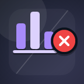 | Close PollclosepollSocial Stream | No value field required— |
Start MapstartmapSocial Stream | No value field required— | |
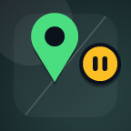 | Pause MappausemapSocial Stream | No value field required— |
Reset MapresetmapSocial Stream | No value field required— | |
Desktop App SourcesgetSourcesDesktop app | No value field required— | |
Desktop App SourcegetSourceDesktop app | Source ID— | |
Add SourceaddSourceDesktop app | Source JSON— | |
Update SourceupdateSourceDesktop app | {"sourceId":"...","updates":{...}}— | |
Remove SourceremoveSourceDesktop app | {"sourceId":"...","confirm":true}— | |
Start SourcestartSourceDesktop app | Source ID— | |
Stop SourcestopSourceDesktop app | Source ID— | |
Restart SourcerestartSourceDesktop app | Source ID— | |
Start All SourcesstartAllSourcesDesktop app | Filter JSON{} | |
Stop All SourcesstopAllSourcesDesktop app | Filter JSON{"confirm":true} | |
Restart All SourcesrestartAllSourcesDesktop app | Filter JSON{"confirm":true} | |
Set Source MutesetSourceMuteDesktop app | {"sourceId":"...","isMuted":true}— | |
Toggle Source MutetoggleSourceMuteDesktop app | Source ID— | |
Set Source VisibilitysetSourceVisibilityDesktop app | {"sourceId":"...","isVisible":false}— | |
Toggle Source VisibilitytoggleSourceVisibilityDesktop app | Source ID— | |
Set Connection ModesetSourceConnectionModeDesktop app | {"sourceId":"...","mode":"websocket"}— | |
Desktop App SettingsgetSettingsDesktop app | No value field required— | |
Update Desktop App SettingsupdateSettingsDesktop app | Settings JSON— |
When a command does nothing
- Check Setup says Online and the correct session is configured.
- Check the required destination is running: dock for queues/pins, Credits page for credits, Flow Actions for media/OBS, writable source for Send Chat, enabled saved products for commerce.
- For workflows, save and enable the flow, confirm the trigger name, and refresh the picker. A flow without a named API trigger is intentionally not callable.
- Read the selected action's Help and diagnostics. After a timeout, check the destination before pressing again; a lost acknowledgement does not prove failure.
- If a preset is unavailable, update the Social Stream runtime as well as the plugin. Adding a key alone does not enable a platform integration.
HTTP fallback is optional in WebSocket mode. It can help when the socket connects without relaying responses. Do not change default channels unless your receiver uses the same custom routing.
Report a problem with the action, expected result, observed result and sanitized diagnostics. Do not share session IDs, passwords or private source URLs.